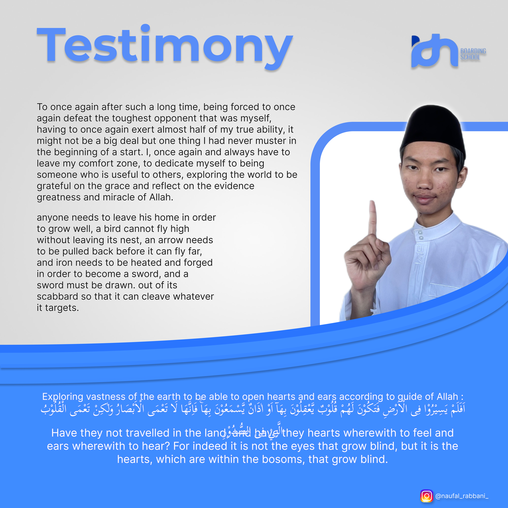
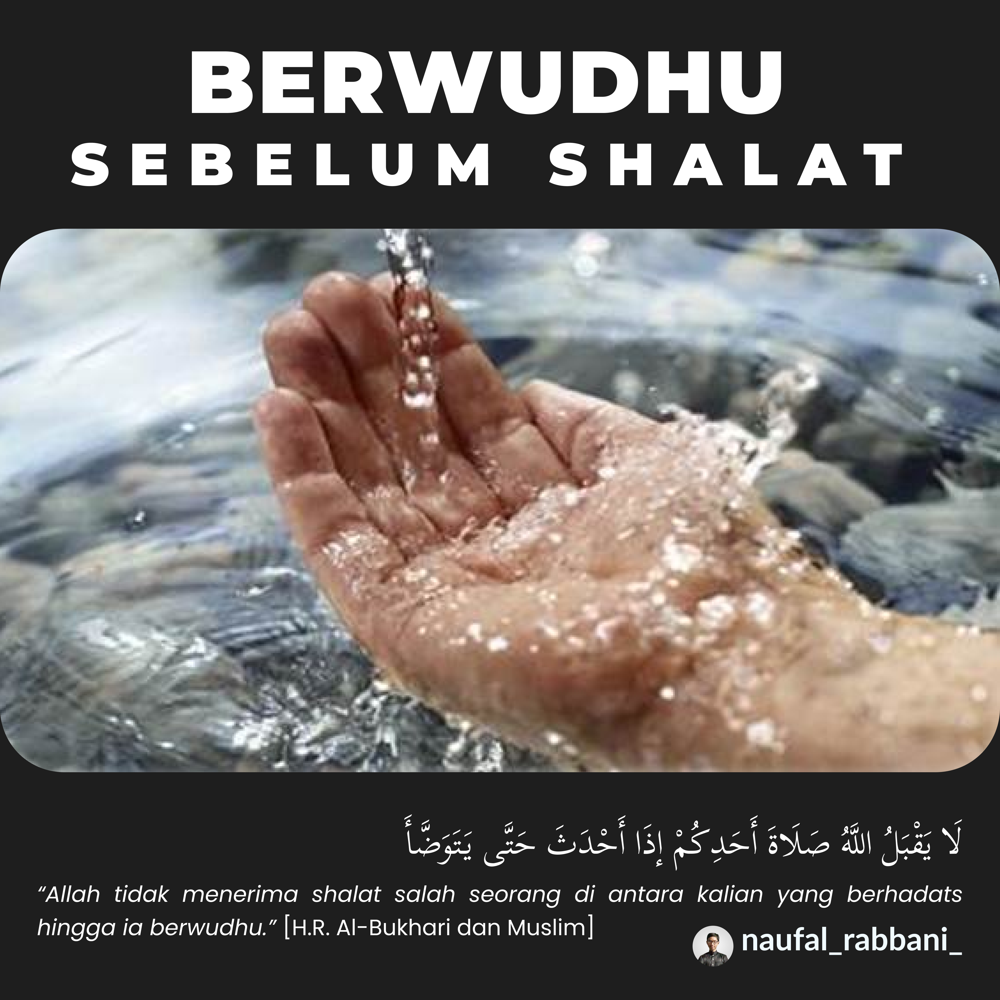
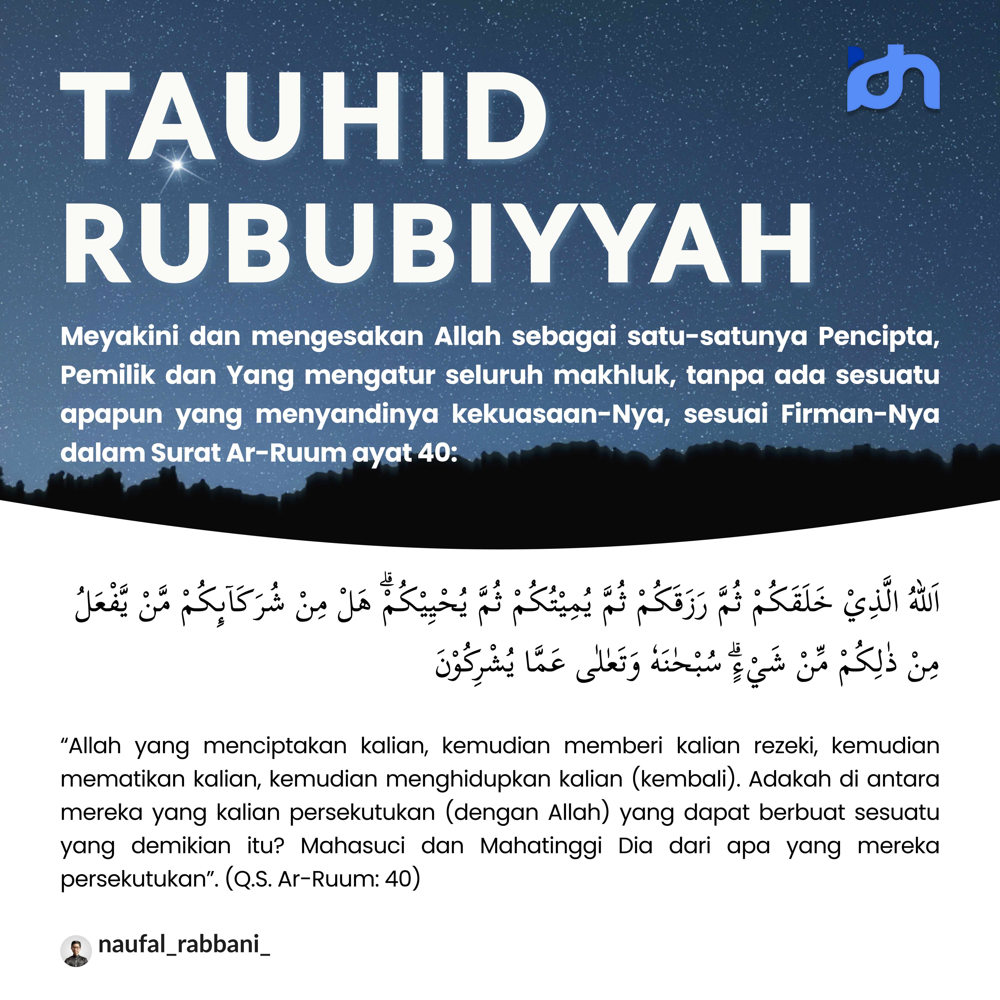

NAUFAL RABBANI
Hi, My name is Naufal Rabbani, I’m a student in IDN Boarding School Solo. I’m a Software Engineer and have Experience on Design Graphic & UI/UX. My project in here is about design UI/UX, Poster, and Microblog.
SKILLS


PROJECTS


UI/UX
Ini adalah hasil project UI/UX berupa karya mockup mobile application. Seorang designer harus memperlajari tentang apa itu User Interface guna memberikan kenyamanan pada user ketika melihat tampilan aplikasi yang dibuat, User Experience adalah tentang bagaimana kita memahami kebutuhan user dan pengalaman mereka menggunakan aplikasi yang kita design.


MICROBLOGS
Microblog adalah sebuah standart wajiib yang harus dibuat guna merangkum seluruh materi yang telah dipelajari. Puluhan microblog yang dibuat adalah hasil karya santri IDN, tujuan dari pembuatan microblog ini semua adalah sebagai sebuah sarana memperluas lingkungan kebermanfaatan kami sebagai santri.





POSTERS
Seluruh poster adalah hasil project yang telah dikerjakan selama di SMK IDN. Ini merupakan sebuah betuk karya dari hasil kerja keras selama belajar di IDN Boarding School, setiap uji kompetensi dan kemampuan hasil belajar adalah berupa karya nyata seperti poster-poster berikut.